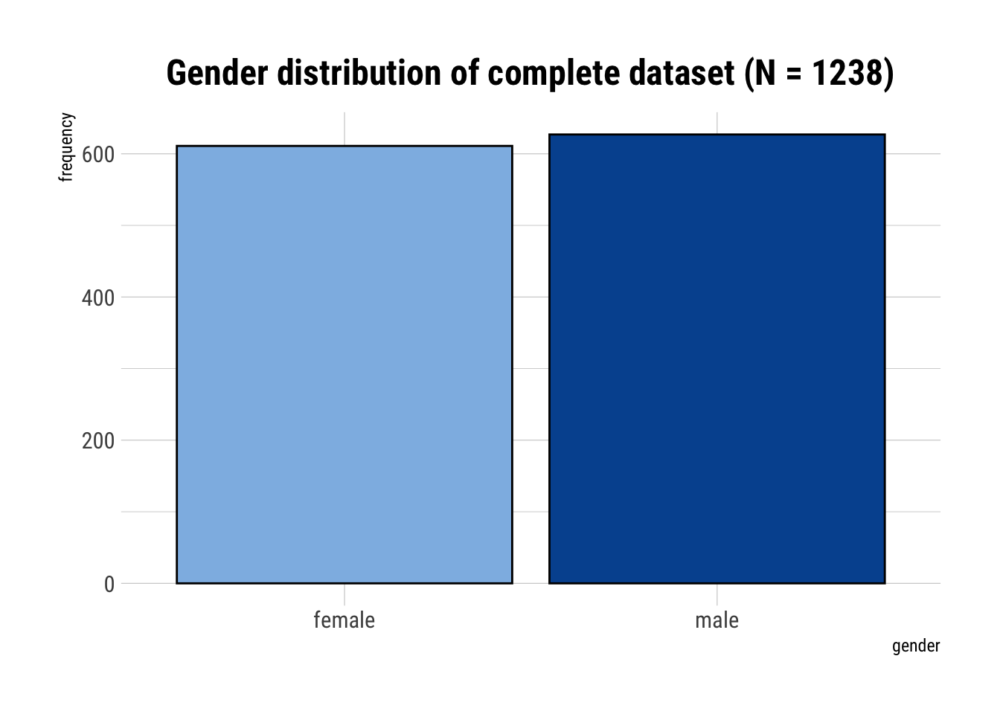
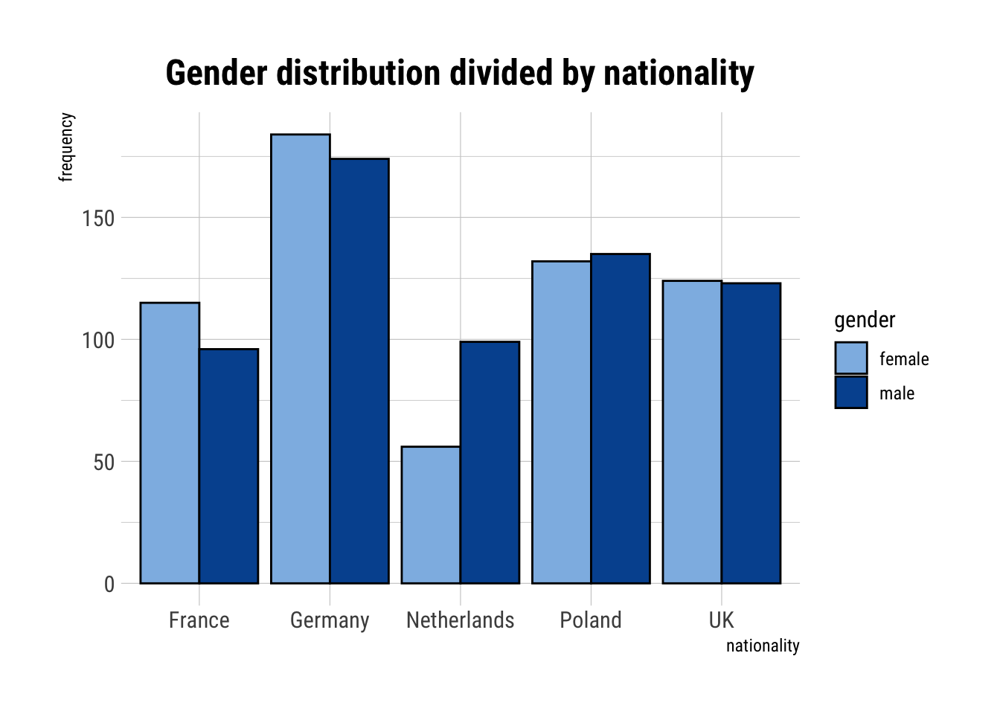
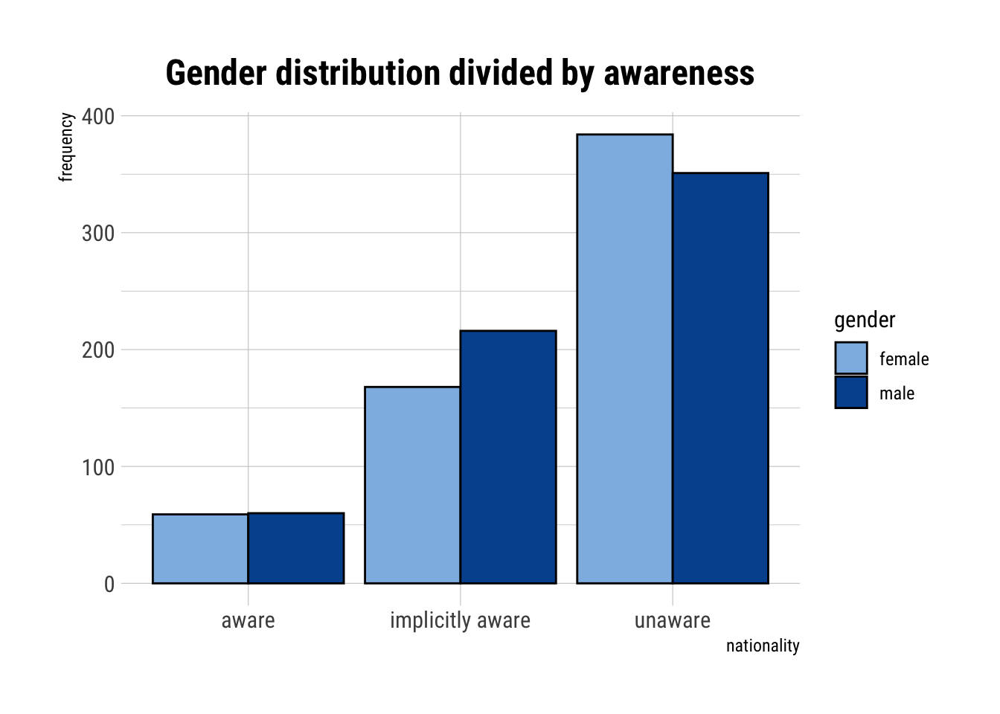
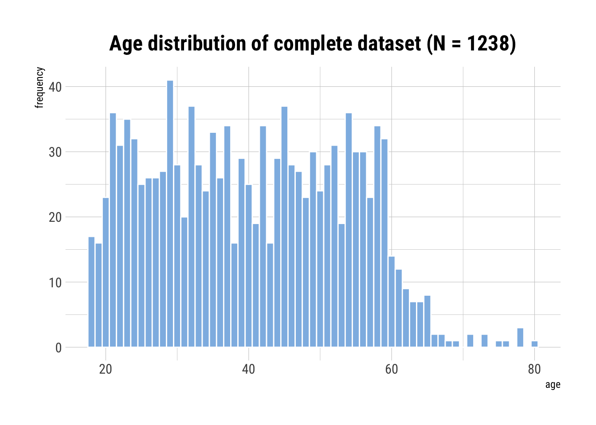
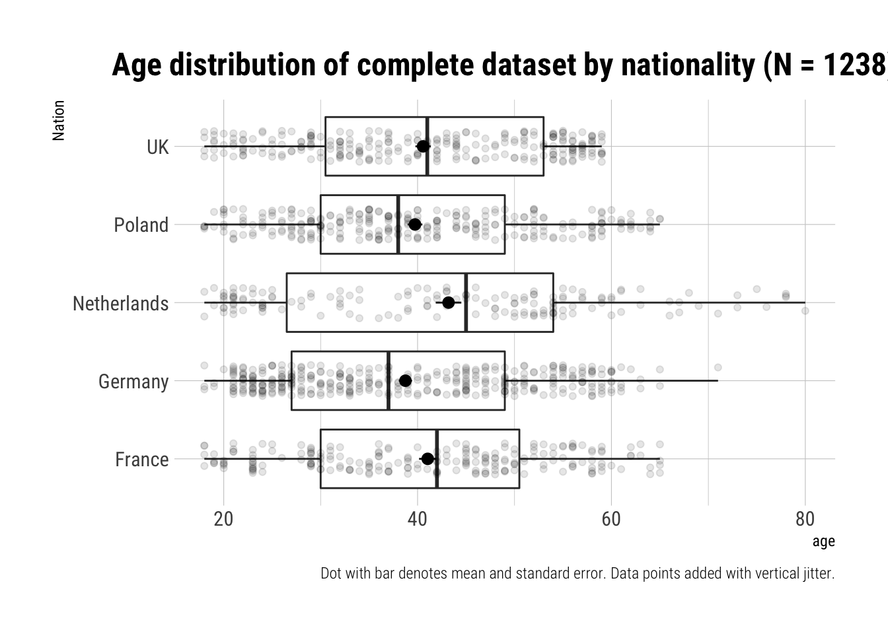
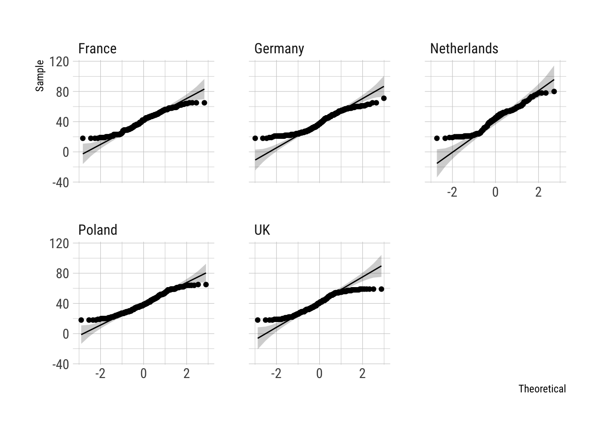
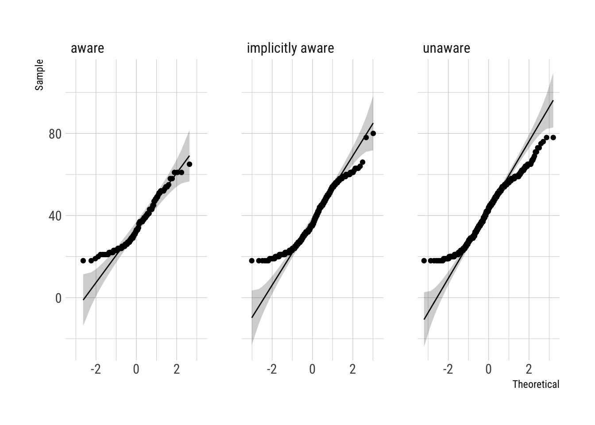
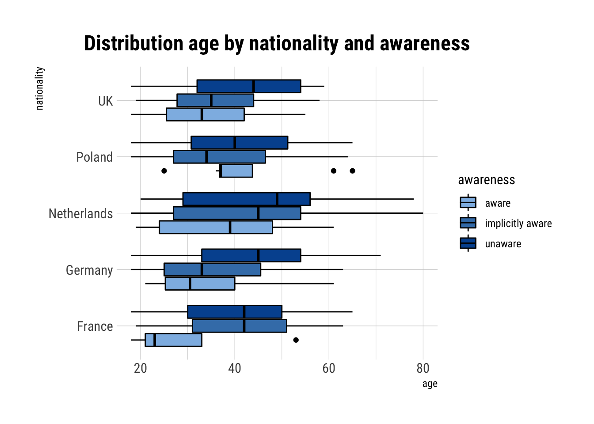

Hypothesis Tests
27 April, 2021
1 Hypothesis 1: Demographic Features
Demographic features influence the awareness of filter bubbles regarding political opinion formation (differently in different countries).
Analyzed variables:
- gender
- age
- education
1.1 Gender
gender.data <- data.frame(dataset$nationality, dataset$gender)
gender.data <- table(dataset$nationality, dataset$gender)
model <- chisq.test(gender.data)
gender.data <- data.frame(dataset$awareness, dataset$gender)
gender.data = table(dataset$awareness, dataset$gender)
model2 <- chisq.test(gender.data)
#describe.chi(model2$observed)The gender distribution for the different countries was significantly different (\(\chi^2\)(4, N = 1238) = 13.75, p = .008, V = .11). Especially for the dutch participants the gap between the amount of male (\(64\%\)) and female (\(36\%\)) participants was large.
The gender distribution in the different awareness groups was also significantly different (\(\chi^2\)(2, N = 1238) = 7.28, p = .026, V = .08). Gender thus influences awareness of filter bubbles regarding political opinion formation.
1.1.1 N = 1238 (Tab.)
dataset %>% select(gender) %>% tbl_summary()| Characteristic | N = 1,2381 |
|---|---|
| gender | |
| female | 611 (49%) |
| male | 627 (51%) |
|
1
n (%)
|
|
1.1.2 N = 1238 (Fig.)
ggplot(dataset) +
aes(x = gender) +
geom_bar(position = "dodge",
colour = "black",
fill = c("#8ebae5","#00549f")) +
labs(title = "Gender distribution of complete dataset (N = 1238)",
x = "gender",
y = "frequency") +
theme(plot.title = element_text(hjust = 0.5))
1.2 Nationality and gender
1.3 Table
dataset %>% select(nationality, gender) %>% tbl_summary(by = gender)| Characteristic | female, N = 6111 | male, N = 6271 |
|---|---|---|
| nationality | ||
| France | 115 (19%) | 96 (15%) |
| Germany | 184 (30%) | 174 (28%) |
| Netherlands | 56 (9.2%) | 99 (16%) |
| Poland | 132 (22%) | 135 (22%) |
| UK | 124 (20%) | 123 (20%) |
|
1
n (%)
|
||
1.3.1 Nationalities (Fig.)
ggplot(dataset) +
aes(x = nationality,
fill = gender) +
geom_bar(position = "dodge",
colour = "black") +
scale_fill_manual(values = c("#8ebae5","#00549f")) +
labs(title = "Gender distribution divided by nationality",
x = "nationality",
y = "frequency") +
theme(plot.title = element_text(hjust = 0.5))
1.3.2 Awareness (Fig.)
ggplot(dataset) +
aes(x = awareness,
fill = gender) +
geom_bar(position = "dodge",
colour = "black") +
scale_fill_manual(values = c("#8ebae5","#00549f")) +
labs(title = "Gender distribution divided by awareness",
x = "nationality",
y = "frequency") +
theme(plot.title = element_text(hjust = 0.5))
1.4 Age
model_b <- bartlett.test(age ~ nationality, data = dataset)
model_anova <- (anova(lm(age ~ nationality, data = dataset)))
model_eta <- effectsize::eta_squared(anova(lm(age ~ nationality, data = dataset)), partial = FALSE)
TukeyHSD(aov(lm(age ~ nationality, data = dataset)))## Tukey multiple comparisons of means
## 95% family-wise confidence level
##
## Fit: aov(formula = lm(age ~ nationality, data = dataset))
##
## $nationality
## diff lwr upr p adj
## Germany-France -2.297 -5.428 0.834 0.265
## Netherlands-France 2.151 -1.666 5.967 0.537
## Poland-France -1.309 -4.632 2.015 0.819
## UK-France -0.476 -3.858 2.906 0.995
## Netherlands-Germany 4.448 0.979 7.917 0.004
## Poland-Germany 0.988 -1.929 3.906 0.887
## UK-Germany 1.821 -1.163 4.805 0.455
## Poland-Netherlands -3.459 -7.103 0.184 0.072
## UK-Netherlands -2.627 -6.324 1.070 0.296
## UK-Poland 0.833 -2.352 4.018 0.953The age distribution showed light-tailed normality for both the different nationalities and the awareness groups.
For the nationalities, the Barlett test was significant, thus not satisfying the ANOVA condition homogeneity of variances (\(\chi^2 = 21.40, df = 4, p < .05\)). Under these conditions, age seemed to differ significantly between nationalities (\(F(4, 1233) = 3.41, p < .05\)). However, the Tukey post-hoc test showed, that the age difference was only significant between Germany and the Netherlands.
For awareness, the Barlett test was not significant, thus satisfying the ANOVA condition of homogeneity of variances (\(\chi^2 = 3.24, df = 2, p > .05\)). Age signifcantly differs between the awareness groups (\(F(2, 1235) = 25.52\), \(p < .05\)). The Tukey post-hoc test showed, that this difference was significant between all groups. On average, the unaware participants were the oldest (\(M = 42.33\), \(SD = 13.21\)) and the aware participants the youngest (\(M = 34.79\), \(SD = 11.59\)).
There was no significant interaction effect of nationality and awareness on age (\(F(8, 1838) = 1.377\), \(p > .05\)).
dataset %>% select(age) %>% tbl_summary(
type = all_continuous() ~ "continuous2",
statistic = all_continuous() ~ c("{median} ({p25}, {p75})", "{min}, {max}")
)| Characteristic | N = 1,238 |
|---|---|
| age | |
| Median (IQR) | 40 (29, 51) |
| Range | 18, 80 |
ggplot(data=dataset,
aes(age)) +
geom_histogram(binwidth = 1,
fill = "#8ebae5",
colour = "white"
) +
#xlim(c(18,80)) +
scale_fill_grey() +
labs(title = "Age distribution of complete dataset (N = 1238)",
x = "age",
y = "frequency") +
theme(plot.title = element_text(hjust = 0.5))
dataset %>% select(age, nationality) %>% tbl_summary(by = nationality,
type = all_continuous() ~ "continuous2",
statistic = all_continuous() ~ c("{median} ({p25}, {p75})", "{min}, {max}")
)| Characteristic | France, N = 211 | Germany, N = 358 | Netherlands, N = 155 | Poland, N = 267 | UK, N = 247 |
|---|---|---|---|---|---|
| age | |||||
| Median (IQR) | 42 (30, 50) | 37 (27, 49) | 45 (26, 54) | 38 (30, 49) | 41 (30, 53) |
| Range | 18, 65 | 18, 71 | 18, 80 | 18, 65 | 18, 59 |
dataset %>% select(age, nationality) %>%
ggplot() +
aes(x = nationality, y = age) +
geom_boxplot() +
stat_summary(fun.data = mean_se) +
geom_jitter(alpha = 0.1, width = 0.2, height = 0.0) +
coord_flip() +
scale_fill_grey() +
labs(title = "Age distribution of complete dataset by nationality (N = 1238)",
y = "age",
x = "Nation",
caption = "Dot with bar denotes mean and standard error. Data points added with vertical jitter.") +
theme(plot.title = element_text(hjust = 0.5))
dataset %>% ggpubr::ggqqplot(x = "age", facet.by = c("nationality")) + theme_ipsum_rc() 
1.4.1 Age and awareness
dataset %>% select(awareness, age) %>% gtsummary::tbl_summary(by = awareness, type = all_continuous() ~ "continuous2",
statistic = all_continuous() ~ c("{mean} ({p25}, {p75})", "{min}, {max}"))| Characteristic | aware, N = 119 | implicitly aware, N = 384 | unaware, N = 735 |
|---|---|---|---|
| age | |||
| Mean (IQR) | 35 (25, 43) | 38 (27, 48) | 42 (32, 54) |
| Range | 18, 65 | 18, 80 | 18, 78 |
ggplot(dataset,
aes(x = age)) +
geom_histogram(binwidth=1,
fill = "#8ebae5",
colour = "white") +
facet_grid(awareness ~ .) +
scale_fill_grey() +
labs(title = "Age distribution by awareness",
x = "age",
y = "frequency") +
theme(plot.title = element_text(hjust = 0.5))
dataset %>% ggpubr::ggqqplot(x = "age", facet.by = c("awareness")) + theme_ipsum_rc() 
bartlett.test(age ~ awareness, data = dataset)##
## Bartlett test of homogeneity of variances
##
## data: age by awareness
## Bartlett's K-squared = 3, df = 2, p-value = 0.2anova(lm(age ~ awareness, data = dataset))effectsize::eta_squared(anova(lm(age ~ awareness, data = dataset)), partial = FALSE)test <- TukeyHSD(aov(lm(age ~ awareness, data = dataset)))1.4.2 Both
ggplot(dataset,
aes(x=nationality,
y=age,
fill = awareness
)) +
geom_boxplot(color = "black") +
#stat_summary(position = position_dodge(width = 0.75), color = "lightgray") +
scale_fill_manual(values = c("#8ebae5","#407fb7","#00549f")) +
labs(title = "Distribution age by nationality and awareness",
x = "nationality",
y = "age") +
theme(plot.title = element_text(hjust = 0.5)) +
#facet_wrap(~nationality, scales = "free_x")# +
coord_flip()